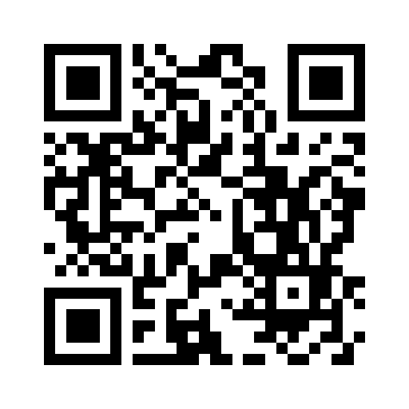
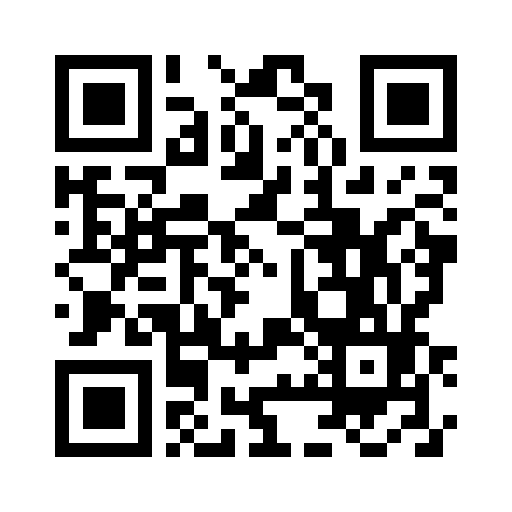
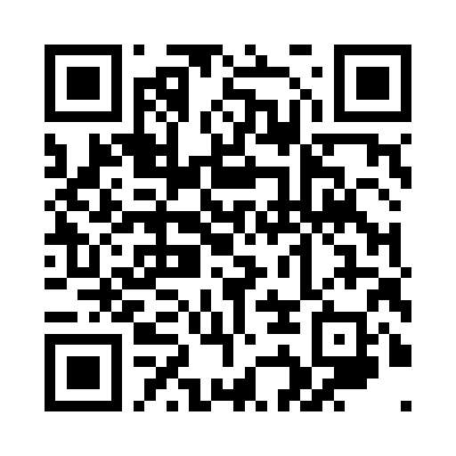
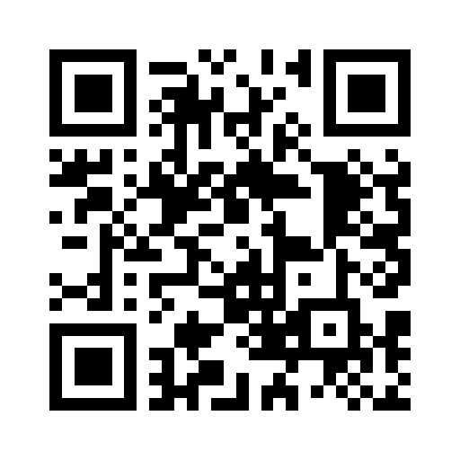
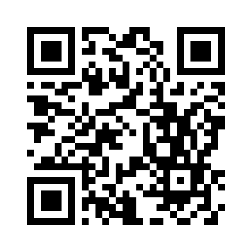
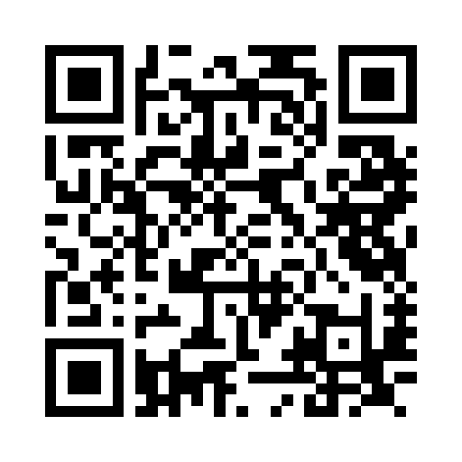
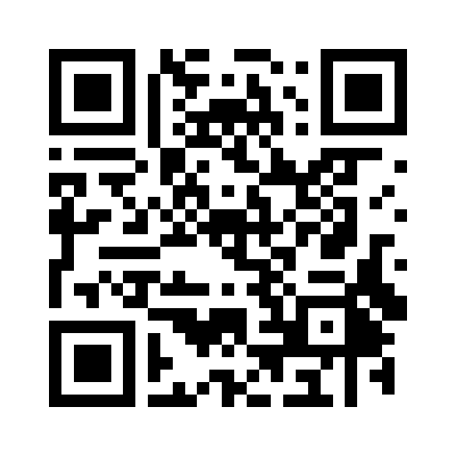
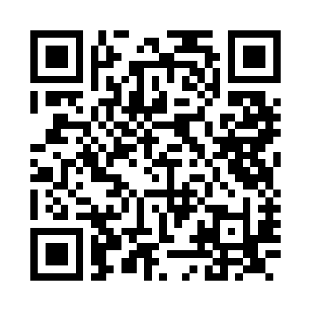

Sugar Orchestra — postes de démonstration
Huit postes, huit sons. Scanner avec l'appareil photo du téléphone ou depuis l'application (bouton « Scanner un QR code »).

Poste 1 · Flore et faune01_02

Poste 2 · Pas sur le sable01_05

Poste 3 · Cuillère, tasse et sucre02_01

Poste 4 · Commerçants et étals02_04

Poste 5 · Le sucre qui crisse04_07

Poste 6 · Lota et cuillère04_09

Poste 7 · La signature du contrat04_10

Poste 8 · Charrette à bœufs06_04